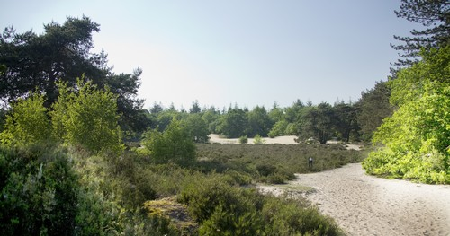

Terhorsterzand
Het Terhosterzand is een natuurgebied ten zuiden van Beilen en het bestaat uit 60 hectare bos en 120 hectare heide en vennen. Het gebied bestaat uit een aantal gedeelten, er is verdeling tussen particulier gebied en een groter gebied van Staatsbosbeheer. Terhorsterzand is een klein, maar gevarieerd terrein met uitgestoven laagten, veenputrestanten, droge en vochtige heide met een ven en jeneverbesstruwelen. In het bos is een kleine spartelvijver met zandstrand. Het water in de vijver is hooguit een meter diep en daarom is het ideaal voor kleine kinderen. Het Terhorsterzand heeft een aantal zandpaden en het grenst aan het natuurgebied Dwingelderveld, hierdoor kunt u een groot stuk wandelen.